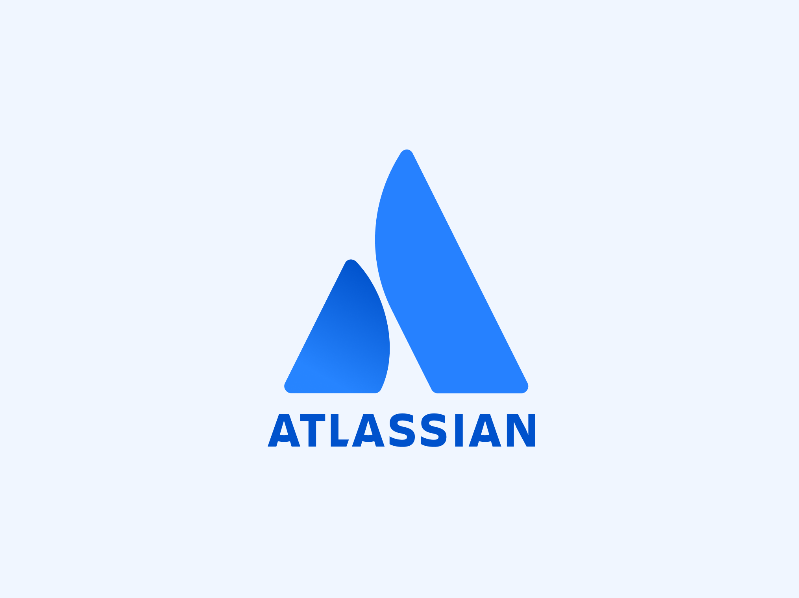

Evaluating the Ease of Use for Atlassian Confluence
Atlassian Confluence is a collaborative workspace designed to help teams organize, share, and collaborate on content seamlessly. During my project, I conducted UX research to improve the editing experience and identify opportunities for enhancing user satisfaction and productivity. Due to a non-disclosure agreement (NDA), I cannot share specific project details publicly, but I would be happy to discuss my contributions and findings further. Feel free to reach out to me at yuansq@umich.edu.